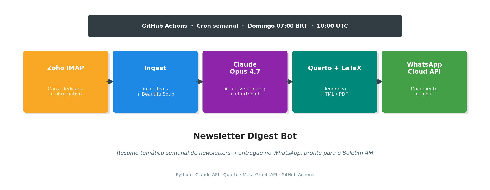

Newsletter Digest Bot — Resumo Semanal Automatizado para o Boletim AM

Visão Geral
Este projeto implementa, seguindo a metodologia CRISP-DM (Cross-Industry Standard Process for Data Mining), o pipeline construído para automatizar o resumo semanal de newsletters que alimenta a redação do Boletim AM (Análise Macro).
As seis fases do CRISP-DM foram adaptadas ao contexto deste projeto, que não é estritamente uma aplicação de data mining, mas um pipeline de síntese informacional com LLM. O mapeamento é direto: a “modelagem” aqui é prompt engineering e escolha de modelo generativo; a “avaliação” é validação qualitativa do resumo produzido; o “deployment” é o agendamento semanal em nuvem com entrega em múltiplos canais.
1. Entendimento do Negócio (Business Understanding)
1.1 Problema
Toda semana, o autor recebe newsletters de diferentes fontes sobre IA, dados, tecnologia e mercado financeiro. O tempo para ler todas manualmente antes de escrever o Boletim AM aos domingos é escasso, e informações relevantes são perdidas.
1.2 Objetivo de negócio
Produzir, todo domingo às 7h (horário de Brasília), um resumo temático das newsletters recebidas na semana, entregue em dois canais:
- PDF arquivado localmente para consulta (versão final);
- WhatsApp para leitura rápida no celular, com o PDF anexo.
O resumo deve:
- Agrupar conteúdos organicamente por tema, não por fonte;
- Destacar implicações para macroeconomia e mercados, criando a ponte direta com o Boletim AM;
- Usar tom editorial direto, sem floreio;
- Citar a newsletter-origem ao final de cada ponto para rastreabilidade.
1.3 Critérios de sucesso
| Critério | Meta |
|---|---|
| Entrega automática | Domingo 07:00 BRT, sem intervenção humana |
| Cobertura | 100% das newsletters assinadas |
| Qualidade do resumo | Claude Opus 4.7 com adaptive thinking em effort: high |
| Formato final | PDF renderizado via Quarto + LaTeX |
| Custo operacional | < US$ 1/mês |
1.4 Restrições identificadas
- Janela de 24h da Meta WhatsApp Cloud API: mensagens free-form só são entregues se houver conversa ativa nos últimos 24h. Solução: usar message template pré-aprovado (em análise pela Meta no momento desta redação).
- Segurança dois-admins do Business Portfolio: impediu criar System User Token permanente. Solução: User Access Token de 60 dias, renovação manual bimestral.
- Infraestrutura local dependente do Mac ligado: resolvido migrando agendamento para GitHub Actions (execução na nuvem).
2. Entendimento dos Dados (Data Understanding)
2.1 Fontes
Newsletters assinadas em um e-mail dedicado do Zoho Mail (conjunto evolui com o tempo — exemplos já cobertos pelo pipeline):
| Newsletter | Remetente | Cadência | Temática |
|---|---|---|---|
| Data Hackers | newsletter@mail.datahackers.com.br |
Semanal | IA e dados, Brasil |
| TechDrop | newsletter@mail.techdrop.news |
Seg/Qua/Sex 6h | Tecnologia e negócios |
| MoneyDrop | newsletter@mail.moneydrop.news |
Ter/Qui 10h | Mercado financeiro |
| AiDrop | newsletter@mail.aidrop.news |
Quintas | Inteligência artificial |
| AI Whisper | aiwhisperbr@mail.beehiiv.com |
Semanal | IA, curadoria Brasil |
A conta Zoho serve exclusivamente como caixa de entrada dessas newsletters — separada do e-mail pessoal/profissional para evitar ruído e facilitar a extração programática.
2.2 Estrutura dos dados
- Protocolo de acesso: IMAP (
imap.zoho.com:993, SSL), autenticação via App Password. - Pasta inspecionada:
Newsletter. O filtro nativo do Zoho (Newsletters / Subscriptions / Automated email alerts) roteia automaticamente novas assinaturas para essa pasta, sem exigir ajuste no código. - Formato: MIME multipart. A maioria dos corpos vem em
text/html; presença ocasional detext/plain.
2.3 Volumetria esperada
- ~4 a 10 e-mails por semana (variando com frequência de cada newsletter).
- Corpos típicos: 2.000 a 20.000 caracteres por mensagem após stripping de HTML.
- Janela deslizante: últimos 7 dias (parametrizável via
--dias).
2.4 Qualidade
- Sinal x ruído: os e-mails trazem HTML pesado (tracking pixels, imagens, botões). Necessário extrair apenas o texto relevante.
- Codificação: UTF-8 consistente; sem problemas de encoding observados.
- Duplicação: cada mensagem tem UID único dentro da pasta
Newsletter; não há necessidade de dedup explícito na arquitetura atual (fonte única).
3. Preparação dos Dados (Data Preparation)
3.1 Coleta via IMAP
Biblioteca utilizada: imap_tools — API idiomática sobre imaplib com suporte a filtros declarativos (AND(date_gte=...)).
with MailBox("imap.zoho.com", 993).login(user, password) as mailbox:
mailbox.folder.set("Newsletter")
for msg in mailbox.fetch(AND(date_gte=since), reverse=True, mark_seen=False):
...Ponto relevante: mark_seen=False para não marcar as mensagens como lidas no Zoho — o usuário continua lendo a caixa normalmente.
3.2 Filtragem por pasta (delegada ao Zoho)
A triagem do que é ou não newsletter é delegada ao próprio Zoho, que possui um filtro nativo pré-configurado:
“Newsletters / Subscriptions / Automated email alerts → Move to folder: Newsletter”
O script lê exclusivamente a pasta Newsletter. A consequência prática é que novas assinaturas são capturadas automaticamente — não é necessário editar código nem redeploy. A manutenção do conjunto de fontes passa a ser 100% no painel do Zoho (assinar/desassinar newsletter, ou mover manualmente um e-mail para dentro/fora da pasta).
Benefícios dessa arquitetura:
- Zero acoplamento entre o código Python e a lista de newsletters ativas;
- Contrato claro: tudo na pasta
Newsletterentra no resumo da semana; - Fácil de estender: assinar uma nova newsletter é um evento operacional, não um deploy.
3.3 Normalização HTML → texto
Biblioteca: BeautifulSoup4. Remoção explícita de <script> e <style> antes da extração:
def html_to_text(html: str) -> str:
soup = BeautifulSoup(html, "html.parser")
for tag in soup(["script", "style"]):
tag.decompose()
return soup.get_text("\n", strip=True)Cada corpo é truncado em 20.000 caracteres (MAX_BODY_CHARS) para evitar estouro de tokens em casos anômalos.
3.4 Estrutura de entrada para o LLM
Itens coletados são concatenados em um único user message com separadores explícitos:
### Newsletter 1
- De: newsletter@mail.datahackers.com.br
- Assunto: 🧠 Você agora faz parte da Newsletter do Data Hackers!
- Data: 2026-04-23T...
<corpo em texto limpo>
---
### Newsletter 2
...Essa estrutura ajuda o modelo a atribuir corretamente as citações no resumo final.
4. Modelagem
4.1 Escolha do modelo
Claude Opus 4.7 (claude-opus-4-7) foi escolhido por:
- Qualidade editorial em pt-BR;
- Adaptive thinking nativo — modelo decide quanto raciocinar por tarefa;
- Janela de contexto de 1M tokens (folga para semanas com muito material);
- Custo compatível com uso semanal (~US$ 0,10 a 0,30 por execução).
4.2 Configurações
client.messages.stream(
model="claude-opus-4-7",
max_tokens=8000,
thinking={"type": "adaptive"},
output_config={"effort": "high"},
system=SYSTEM_PROMPT,
messages=[{"role": "user", "content": build_user_message(items)}],
)Streaming foi usado para evitar timeout HTTP em respostas longas (recomendação do SDK da Anthropic para max_tokens altos ou input longo).
4.3 Prompt engineering — o system prompt
Princípios do prompt:
- Persona explícita: “assistente especializado em síntese para economista sênior que escreve o Boletim AM”. Isso calibra registro e profundidade.
- Agrupamento orgânico (não categorias fixas): o modelo detecta temas a partir do conteúdo semanal, refletindo o que a semana de fato trouxe.
- Citação obrigatória da fonte ao final de cada bullet — rastreabilidade.
- Seção fixa de implicações macro: força o bridge para o Boletim AM.
- Restrições de tom: sem emoji, sem preâmbulo, sem jargão desnecessário.
Trecho-chave do prompt:
“Use títulos de nível 2 (##) para cada TEMA identificado organicamente a partir do conteúdo. Não force categorias pré-definidas. Ao final, adicione uma seção ‘Implicações para macroeconomia e mercados’ com 3 a 5 bullets conectando os temas da semana a possíveis impactos em política monetária, inflação, mercados financeiros, atividade econômica ou geopolítica.”
4.4 Formato de saída
O modelo retorna Markdown compatível com Quarto. O script concatena:
- Frontmatter YAML (título, autor, data, configurações de HTML e PDF);
- Corpo gerado pelo modelo;
- Apêndice com lista de fontes (subject + remetente).
O arquivo final é gravado em digests/resumo-YYYY-MM-DD.qmd.
5. Avaliação
5.1 Testes locais (Mac)
Primeira execução com janela de 30 dias devolveu 4 newsletters — todas mensagens de boas-vindas (sem conteúdo editorial real). O modelo foi honesto: identificou a ausência de conteúdo substantivo e declarou isso explicitamente, em vez de alucinar síntese. Esse é um sinal positivo de calibração.
Trecho do primeiro resumo: “As quatro mensagens recebidas nesta semana são e-mails de boas-vindas e confirmação de assinatura, sem conteúdo editorial substantivo para resumir.”
5.2 Simplificação da arquitetura de filtragem
A versão inicial usava uma lista de substrings (SENDER_PATTERNS) para decidir quais e-mails eram newsletters. Esse desenho tinha dois problemas:
- Fragilidade: erros sutis como
techdrops(coms) vs.techdrop.news(sems) silenciavam fontes inteiras; - Acoplamento: assinar uma newsletter nova exigia editar código, commitar e dar push.
Ao descobrir que o Zoho tem um filtro nativo que roteia automaticamente qualquer Newsletter / Subscription / Automated alert para a pasta Newsletter, a arquitetura foi simplificada: o script passou a ler apenas essa pasta, sem filtro de remetente. Assinar uma newsletter nova deixa de ser um evento de engenharia.
5.3 Teste end-to-end na CI
Workflow disparado manualmente (workflow_dispatch) concluiu em 2m 22s com todas as etapas verdes:
- Checkout → Setup Python → Setup Quarto+TinyTeX;
- Instalação de dependências;
- Fetch IMAP + síntese Claude + render PDF + envio WhatsApp;
- Commit do digest de volta no repo.
5.4 Descoberta crítica: janela de 24h do WhatsApp
Na primeira execução, a API da Meta retornou 200 OK com message_id válido, mas o PDF não chegou no WhatsApp. Após investigação via logging da resposta:
{
"messaging_product": "whatsapp",
"contacts": [{"input": "***", "wa_id": "***"}],
"messages": [{"id": "wamid.HBgN..."}]
}O request foi aceito, mas a Meta descartou silenciosamente a entrega por estar fora da janela de sessão de 24h. Ao enviar um “olá” do WhatsApp pessoal para o número de teste, a sessão foi aberta e o PDF pendente chegou imediatamente.
Implicação arquitetural: para operação sem intervenção humana, o free-form message não é viável. Caminho: template de mensagem pré-aprovado, que a Meta entrega a qualquer hora sem exigir sessão ativa.
6. Implantação (Deployment)
6.1 Arquitetura
┌─────────────┐
│ Cron (GH) │ Domingo 10:00 UTC = 07:00 BRT
└──────┬──────┘
│ workflow_dispatch
▼
┌─────────────────────────────────┐
│ GitHub Actions (Ubuntu-latest) │
│ • Python 3.12 │
│ • Quarto + TinyTeX │
└──────┬──────────────────────────┘
│
▼
┌─────────────────┐ ┌──────────────────┐
│ Zoho IMAP │─────▶│ Claude Opus 4.7 │
│ (newsletters) │ │ (síntese) │
└─────────────────┘ └────────┬─────────┘
│
▼
┌──────────────────┐
│ .qmd → .pdf │
│ (Quarto+LaTeX) │
└────────┬─────────┘
│
┌──────────────┴──────────────┐
▼ ▼
┌────────────────┐ ┌──────────────────┐
│ git commit │ │ Meta WhatsApp │
│ (arquivo PDF │ │ Cloud API │
│ + .qmd) │ │ (documento) │
└────────────────┘ └──────────────────┘6.2 Agendamento
Arquivo .github/workflows/sunday-digest.yml:
on:
schedule:
- cron: "0 10 * * 0" # domingo 10:00 UTC = 07:00 BRT
workflow_dispatch: # botão manual sempre disponível6.3 Renderização PDF
- Quarto 1.9+ com engine LuaLaTeX (via TinyTeX na CI).
- Frontmatter do
.qmddeclara dois formatos (htmlepdf), permitindo renderizar qualquer um comquarto render --to pdf. - Babel-portuges e hyphen-portuguese instalados automaticamente pelo Quarto quando detectado
lang: pt-BR.
6.4 Distribuição via WhatsApp
Meta WhatsApp Cloud API com:
- Número remetente: número de teste gratuito (+1 555 149 6709);
- Destinatário: WhatsApp pessoal verificado na lista de teste (limite de 5 destinatários por app de teste);
- Upload de mídia:
POST /v20.0/{phone_id}/mediaretornamedia_id; - Envio:
POST /v20.0/{phone_id}/messagescomtype: "document"emedia_id.
with httpx.Client(timeout=60.0) as c:
# 1. upload do PDF → media_id
resp = c.post(f"{base}/media", headers=headers, ...)
media_id = resp.json()["id"]
# 2. envio do documento com legenda
resp = c.post(f"{base}/messages", headers=headers, json={
"messaging_product": "whatsapp",
"to": to,
"type": "document",
"document": {"id": media_id, "filename": ..., "caption": ...},
})A legenda é construída dinamicamente a partir dos títulos ## do resumo (até 5 temas), funcionando como teaser no chat antes do PDF.
6.5 Gerenciamento de segredos
Seis secrets no GitHub (Settings → Secrets and variables → Actions):
ZOHO_EMAIL,ZOHO_APP_PASSWORDANTHROPIC_API_KEYWHATSAPP_TOKEN,WHATSAPP_PHONE_NUMBER_ID,WHATSAPP_TO_NUMBER
Upload em lote via gh secret set -f .env, lendo o arquivo .env local — o CLI faz o envio sem expor os valores em logs.
6.6 Desafios e soluções
| Obstáculo | Solução |
|---|---|
| IMAP do Zoho desabilitado por default | Habilitar em Settings → Mail Accounts → IMAP |
| Senha normal não autentica via IMAP com 2FA | Gerar App Password específica |
Newsletters em pasta separada (Newsletter) |
Varredura múltipla de pastas com dedup por UID |
| Categorização do template como Marketing pela Meta | Aprovação costuma sair em horas; não afeta entrega ao número de teste |
| Regra de 24h da Meta para free-form | Migração para template pré-aprovado (em curso) |
| Bloqueio de criação de System User Token (2-admin policy) | Fallback para User Access Token de 60 dias |
| Rate limit de 1 System User Admin por Business | Criar como Funcionário com recursos atribuídos — não foi necessário dada a escolha anterior |
7. Monitoramento e Próximos Passos
7.1 Itens abertos
- Aprovação do template
resumo_newsletterspela Meta (statusPENDINGna data deste documento). Quando aprovado, a funçãosend_whatsapp_pdfserá ajustada para usartype: "template"com parâmetro de documento no cabeçalho. - Renovação do token a cada ~55 dias: próxima janela em meados de junho/2026. Processo: gerar token curto no Graph API Explorer, trocar por token longo via endpoint
oauth/access_token, atualizar secret no GitHub. - Assinatura da newsletter “IA sob Controle”: filtro já plantado, aguarda primeira edição.
7.2 Métricas a acompanhar
- Tempo de execução do workflow (meta: < 5 minutos).
- Taxa de entrega WhatsApp (meta: 100% após aprovação do template).
- Custo Claude API (meta: < US$ 5 / mês).
- Uso de tokens (
usage.input_tokens,usage.output_tokensno retorno — logar se necessário).
7.3 Evoluções possíveis
- Expansão do conjunto de fontes: adicionar newsletters de macro/mercado (Brazil Journal, The Brief, Bloomberg Evening Briefing) para enriquecer a seção de implicações.
- Histórico consultável: usar o acervo de
digests/*.qmdcomo corpus para busca semântica (RAG) quando escrever edições futuras do Boletim AM. - Publicação no Quarto Pub: renderizar como site estático e hospedar os resumos semanais publicamente (opcional, depende de estratégia editorial).
- Templates dinâmicos de legenda: se a Meta aprovar, variar a legenda conforme volume/tom da semana (semanas de recessão vs. semanas de euforia).
Anexo A — Inventário técnico
| Componente | Tecnologia | Versão / Modelo |
|---|---|---|
| Coleta de e-mails | IMAP + imap_tools |
Zoho Mail / 1.7+ |
| Extração de HTML | BeautifulSoup4 | 4.12+ |
| Síntese | Anthropic Claude API | Opus 4.7 (1M context) |
| Renderização | Quarto + LaTeX | 1.9+ / LuaHBTeX |
| Entrega | Meta WhatsApp Cloud API | v20.0 |
| Agendamento | GitHub Actions | ubuntu-latest, Python 3.12 |
| Versionamento | Git + GitHub (repo privado) | — |
| Linguagem principal | Python | 3.12+ |
Anexo B — Estrutura do repositório
Newsletters/
├── .env # credenciais locais (gitignored)
├── .env.example # template público
├── .github/
│ └── workflows/
│ └── sunday-digest.yml # cron + dispatch manual
├── .gitignore
├── digests/ # .qmd e .pdf gerados (versionados)
│ ├── resumo-2026-04-23.qmd
│ └── resumo-2026-04-23.pdf
├── newsletter_bot_documentacao.qmd # este documento
├── requirements.txt
└── resumo.py # script principal